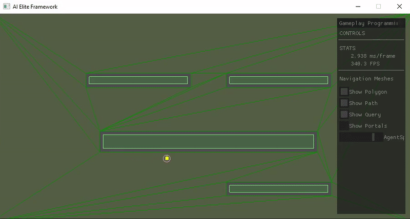

A* Pathfinding /
Navigation Mesh
Intro
This project was made for the gameplay programming course. During this course we learned a lot about AI with topics such as steering behaviours, flow fields, Space partitioning and pathfinding. The framework for this project was provide to us by the school.
A* pathfinding
To tackle the problem of finding the optimal path between an agent and his desired position while also taking in account any potential obstacles we looked into several algorithms. After learning about algorithms such as Dijkstra's algorithma and breadth-first search we were asked to implement the A* pathfinding algorithm
Here you can see the algorithm clearly with the grid visible.
here you can see the algorithm with the start changing positions.
Navigation meshes
After succesfully implementing the A*Pathfinding algorithm the next step was to implement navigation meshes. But what are Navigation meshes? Well they are defined as an abstract data structure used in artificial intelligence applications to aid agents in pathfinding through complicated spaces.
Here you can see the algorithm at work.
here you can see the algorithm with the Query visible.
here you can see the algorithm with the portals and query visible.
Example Code:
std::vector::iterator it = std::find_if(openList.begin(), openList.end(), [lowestF](Connection* connection)
{
if (connection->GetFCost() == lowestF)
return true;
return false;
});
//Optimize our path using funnel algorithm!
auto const portals = FindPortals(pNavigationMesh, vPathNodes, pStartNode->GetPosition(), pEndNode->GetPosition());
vPath = OptimizePortals(portals, pStartNode->GetPosition());
vPath.push_back(vPathNodes[vPathNodes.size() - 1]->GetPosition()); //Push goal as part of the path
//=== Private Pathfinder Functions ===
//--- References ---
//http://digestingduck.blogspot.be/2010/03/simple-stupid-funnel-algorithm.html
//https://gamedev.stackexchange.com/questions/68302/how-does-the-simple-stupid-funnel-algorithm-work
std::vector NavigationMeshPathfinder::OptimizePortals(const std::vector& portals,
const Elite::Vector2& startPos) const
{
//P1 == right point of portal, P2 == left point of portal
std::vector vPath = {};
Vector2 apex = startPos;
int apexIndex = 0, leftLegIndex = 0, rightLegIndex = 0;
Vector2 rightLeg = portals[rightLegIndex].Line.p1 - apex;
Vector2 leftLeg = portals[leftLegIndex].Line.p2 - apex;
for (unsigned int i = 1; i < static_cast(portals.size()); ++i)
{
//--- GET CURRENT PORTAL ---
auto portal = portals[i];
//--- RIGHT CHECK ---
//Create the new right leg = from the apex to the p1 point of the portal
Vector2 newRightLeg = portal.Line.p1 - apex;
//If going inwards:
if (!(Cross(rightLeg, newRightLeg) <= 0.0f))
{
//Check if we cross over the left leg(Tip: Use Cross again with the leftLeg)
//If not crossing over the left leg :
if (!(Cross(leftLeg, newRightLeg) > 0.0f))
{
// Tighten the funnel
rightLeg = newRightLeg;
rightLegIndex = i;
}
else
{
apex += leftLeg;
apexIndex = leftLegIndex;
unsigned int newIt = apexIndex + 1;
i = newIt;
leftLegIndex = newIt;
rightLegIndex = newIt;
vPath.push_back(apex);
if (newIt < static_cast(portals.size()))
{
rightLeg = portals[rightLegIndex].Line.p1 - apex;
leftLeg = portals[leftLegIndex].Line.p2 - apex;
continue;
}
}
}
//If not going inwards, do nothing and just go to the left check.
//--- LEFT CHECK ---
Vector2 newLeftLeg = portal.Line.p2 - apex;
if ((Cross(leftLeg, newLeftLeg) <= 0.0f))
{
if ((Cross(rightLeg, newLeftLeg) > 0.0f))
{
leftLeg = newLeftLeg;
leftLegIndex = i;
}
else
{
apex += rightLeg;
apexIndex = rightLegIndex;
unsigned int newIt = apexIndex + 1;
i = newIt;
leftLegIndex = newIt;
rightLegIndex = newIt;
vPath.push_back(apex);
if (newIt < static_cast(portals.size()))
{
rightLeg = portals[rightLegIndex].Line.p1 - apex;
leftLeg = portals[leftLegIndex].Line.p2 - apex;
continue;
}
}
}
}
return vPath;
}